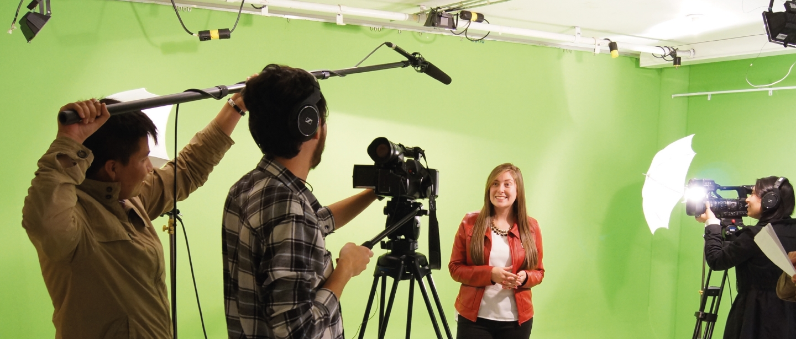

Planteamiento del Problema
Uno de los principales problemas planteados es que los comunicadores sociales es que no salgan con las suficientes capacidades lingüísticas y de dialogo necesarias para que se dé un cambio social donde cada comunicador social sea capaz de dar un cambio de pensamiento crítico donde la sociedad pueda llegar a desarrollar un diferente criterio frente a problemas cotidianos, de valores de una sociedad subjetiva y egoísta.